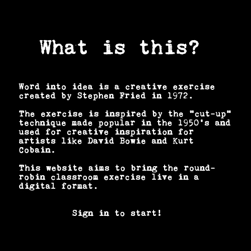

Loading...

What is this?
Word Into Idea is a creative exercise made popular by Stephen Fried in 1991.
This website aims to bring the round-robin classroom exercise live in a digital format.
Sign in to start!